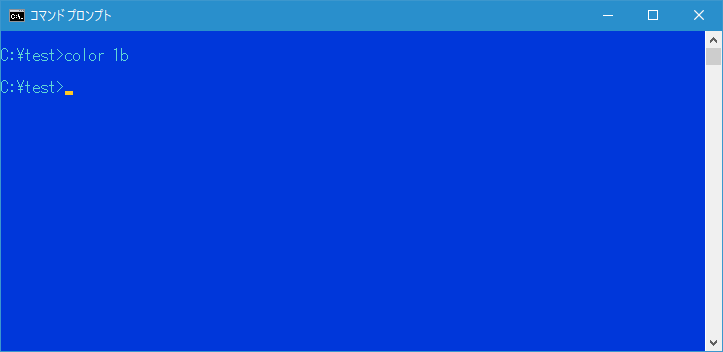
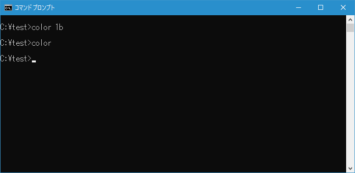

コマンドプロンプトの文字色と背景色の変更(COLOR)
コマンドプロンプトの文字色と背景色を変更できる COLOR コマンドの使い方について解説します。
COLORコマンドの使い方
COLOR コマンドを実行するとコマンドプロンプトの文字色と背景色を変更できます。書式は次の通りです。
COLOR [属性]
コマンドプロンプトで表示される文字色と背景の色はプロパティで設定することが可能です。プロパティを使った方法については「プロパティの変更」を参照して下さい。
文字色と背景色を変更する
COLOR コマンドの引数には背景色を表す16進数の数字と文字色を表す16進数の数字を続けて記述します。16進数の数字と色の関係は次のようになっています。
| 色 | 値 | 名前 | 色 | 値 | 名前 |
|---|---|---|---|---|---|
| 0 | 黒 | 8 | 灰色 | ||
| 1 | 青 | 9 | 明るい青 | ||
| 2 | 緑 | a | 明るい緑 | ||
| 3 | 水色 | b | 明るい水色 | ||
| 4 | 赤 | c | 明るい赤 | ||
| 5 | 紫 | d | 明るい紫 | ||
| 6 | 黄色 | e | 明るい黄色 | ||
| 7 | 白 | f | 輝く白 |
例えば背景色に青、文字色に明るい水色を設定する場合、属性は青を表す 1 と明るい水色を表す b を組み合わせて次のように実行します。
color 1b
COLOR コマンドを実行するとコマンドプロパティの文字色と背景色が指定した色に変更されます。

なお文字色と背景色を同じ色に設定することはできません。
文字色と背景色をデフォルトに戻す
文字色と背景色をデフォルトの色に戻すには引数なしで次のように実行します。
color
COLOR コマンドを実行すると文字色と背景色がデフォルトの値に戻ります。

-- --
COLOR コマンドを使ってコマンドプロパティの文字色と背景色を変更する方法について解説しました。
( Written by Tatsuo Ikura )

著者 / TATSUO IKURA
初心者～中級者の方を対象としたプログラミング方法や開発環境の構築の解説を行うサイトの運営を行っています。